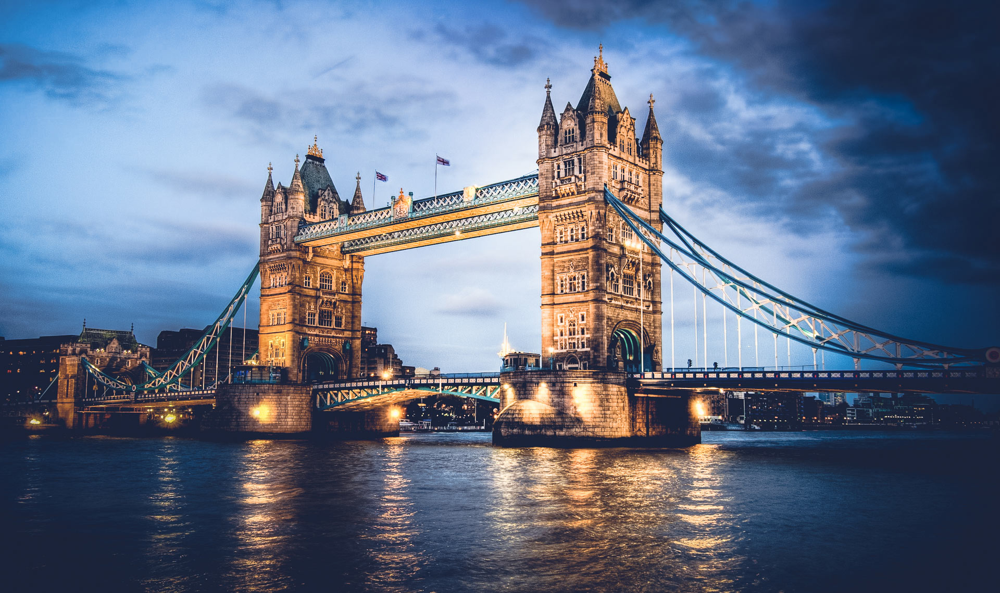

"Londres é a capital da Inglaterra e do Reino Unido. É uma das maiores metrópoles do planeta, localizada às margens do Rio Tâmisa. A cidade abriga mais de 7 milhões de pessoas. Londres é um dos mais importantes núcleos financeiros mundiais e integra o circuito político, cultural, artístico e fashion do globo.

Ponte em Londres.
"A Ponte de Londres, oficialmente conhecida como "London Bridge," é uma icônica ponte histórica que cruza o Rio Tâmisa, ligando a Cidade de Londres à região de Southwark. Ao longo dos séculos, a ponte tem passado por diversas reconstruções e restaurações. A versão atual da ponte foi inaugurada em 1973, substituindo uma estrutura do século XIX..